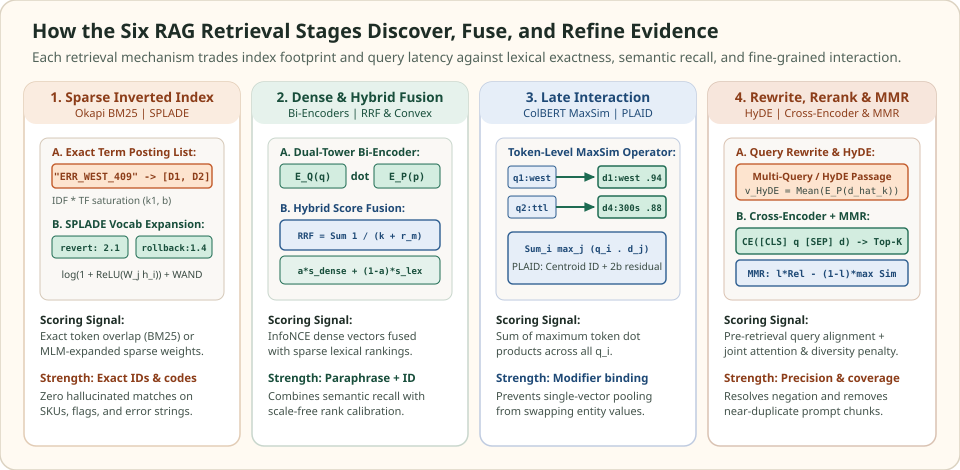

Retrieval methods: match, fuse, and rerank evidence across representations
Once a corpus has been segmented into self-contained passages (chunking) and indexed for sub-linear lookup (ANN methods), the retrieval pipeline decides how relevance is scored, combined, and filtered between a user's question and the candidate pool. No single representation solves every query class: dense bi-encoders bridge vocabulary paraphrases but blur rare error codes, sparse inverted indexes nail exact identifiers but miss synonyms, and single-vector pooling loses fine-grained modifier binding inside multi-entity passages.
Production RAG retrieval therefore operates as a multi-stage cascade—transforming the query before search, running lexical and dense candidate generation in parallel, fusing rankings on a common scale, and applying token-level late interaction or cross-encoder reranking with diversity selection before packing the generator prompt.
Why a single scoring function fails across query types
Given an eligible corpus $\mathcal{C}(q) \subseteq \mathcal{D}$ and a prompt budget of $k$ passages ($k \ll |\mathcal{C}(q)|$), a retrieval pipeline maps a raw user turn $q_0$ through four functional stages:
Each stage repairs a specific representation bottleneck of the stage before it while operating on a progressively smaller candidate set ($|\mathcal{D}| \to K \approx 100 \to k \approx 5$):
| Failure mode | Why a single dense vector fails | Retrieval remedy |
|---|---|---|
| Rare identifier miss | Subword tokenization splits ERR_WEST_409 or SKU codes into generic fragments whose pooled vector drifts toward unrelated logs | Okapi BM25 exact term matching or learned sparse expansion (SPLADE) over inverted lists |
| Zero-overlap paraphrase | Lexical overlap is zero when the query asks about "stopping stale reads" and the runbook says "invalidate cached entries" | Asymmetric dense bi-encoders trained with InfoNCE and hard negatives |
| Scale distortion in hybrid search | Adding unbounded BM25 scores $[0, 25+]$ directly to narrow cosine similarities $[0.65, 0.88]$ lets BM25 variance dominate the sum | Reciprocal Rank Fusion ($\operatorname{RRF}$) or min-max / z-score calibrated convex combination |
| Attribute-binding swap | Mean pooling averages all tokens into one vector, confusing "West 300s, East 60s" with "West 60s, East 300s" | Multi-vector late interaction (ColBERT $\operatorname{MaxSim}$) or full cross-encoder self-attention |
| Top-$k$ context redundancy | The top 5 highest-scoring chunks are near-duplicate mirrors of one fact, starving the generator of complementary steps | Maximal Marginal Relevance ($\operatorname{MMR}$) penalizing high similarity to already-selected passages |
Quantify the compute and storage spectrum
The computational gap between first-stage candidate generation and second-stage reranking follows directly from whether query tokens $q = (q_1, \dots, q_{L_q})$ and passage tokens $d = (d_1, \dots, d_{L_d})$ interact before or after transformer encoding:
Because $E_P(d)$ and token matrices $\{\mathbf{d}_j\}$ are computed offline at indexing time, bi-encoders and ColBERT evaluate only the query encoder online. Cross-encoders, by contrast, run full self-attention over the concatenated pair $[q; d]$ at query time—delivering the highest precision on negation and multi-condition constraints, but restricting their budget to a shortlist of $K \in [20, 100]$ candidates.
Compare the six core RAG retrieval methods
The diagram and table below organize the six retrieval mechanisms across sparse indexing, dense dual encoders, hybrid fusion, token-level late interaction, query transformation, and cross-encoder diversity selection:


Comparison of the six core RAG retrieval methods across scoring formula, index footprint, query-time latency, and primary failure mode solved.
| Retrieval method | Core scoring rule | Index storage per passage | Query-time cost | Primary failure mode solved |
|---|---|---|---|---|
| BM25 & Learned Sparse (SPLADE) | TF-IDF saturation or MLM log-ReLU sparse dot product | Inverted posting entries ($\sim 50\text{--}250$ non-zero weights) | $1\text{--}5\text{ ms}$ (WAND / MaxScore pruning) | Exact error codes, SKUs, flags, and learned lexical synonym expansion |
| Dense Bi-Encoders | $E_Q(\text{prefix}_q \Vert q)^\top E_P(\text{prefix}_p \Vert d)$ | $1$ vector ($768\text{-D float32} = 3\text{ KB}$, or $512\text{ B}$ MRL slice) | $1$ query encode + ANN search ($2\text{--}8\text{ ms}$) | Zero-overlap semantic paraphrases and conceptual similarity |
| Hybrid Search & Fusion | $\sum_m \frac{1}{k + r_m(d)}$ (RRF) or $\alpha \tilde{s}_{\text{dense}} + (1-\alpha)\tilde{s}_{\text{lex}}$ | Sparse inverted index + dense ANN index | Parallel sparse + dense ($\sim 5\text{--}10\text{ ms}$) | Combines lexical precision and semantic recall without raw-score distortion |
| Late Interaction (ColBERT) | $\sum_{i=1}^{L_q} \max_{j=1}^{L_d} \mathbf{q}_i^\top \mathbf{d}_j$ ($\operatorname{MaxSim}$) | $L_d$ token vectors ($2\text{-bit PLAID residuals} \approx 4\text{--}8\text{ KB}$) | Centroid pruning + residual gather ($\sim 8\text{--}20\text{ ms}$) | Preserves modifier-to-entity binding across multi-clause passages |
| Query Rewriting & HyDE | Multi-query RRF or $\operatorname{Mean}\bigl(E_P(\hat{d}_1), \dots, E_P(\hat{d}_K)\bigr)$ | Uses existing sparse/dense index unchanged | $+1$ LLM rewrite or HyDE generation call | Bridges vague questions, conversational pronouns, and question-to-passage gap |
| Cross-Encoders & MMR Diversity | $s_{\text{CE}}(q, d)$ followed by $\lambda\,\text{Rel}(d, q) - (1-\lambda)\max_{s\in S}\operatorname{sim}(d, s)$ | Zero extra index storage (operates on top-$K$ text) | $K$ cross-encoder passes ($20\text{--}60\text{ ms}$) + $O(k K)$ MMR | Resolves negation/constraints and removes near-duplicate context chunks |
Scroll horizontally to compare the columns. Keyboard: focus the table, then use the left and right arrow keys.
Follow the dedicated retrieval method guides
Each guide below opens with a concrete numerical failure example where a simpler retriever ranks the wrong passage first, visualizes the exact scoring mechanics in a custom diagram, derives the governing equations, and verifies the algorithm in runnable Python code.
Score exact identifiers with Okapi BM25 term saturation and length normalization, expand sparse vocabulary weights with SPLADE, and prune inverted posting lists.
Train dual-tower bi-encoders with InfoNCE contrastive loss and hard negatives, separate asymmetric query and passage prefixes, and truncate dimensions with Matryoshka embeddings.
Combine sparse BM25 and dense vector retrievers without raw-score distortion using Reciprocal Rank Fusion (RRF) and normalized convex combinations.
Retain per-token embeddings, score query-to-passage alignments with the ColBERT MaxSim operator, and compress multi-vector indexes with PLAID centroid residuals.
Decontextualize conversational queries, decompose multi-hop questions, fuse multi-query expansions, and project queries into passage space with Hypothetical Document Embeddings (HyDE).
Rescore bi-encoder candidate pools with full self-attention cross-encoders, calibrate relevance thresholds, and diversify assembled context with Maximal Marginal Relevance (MMR).
Check the operating assumptions
If a cross-encoder is strictly more expressive than a bi-encoder, why can't it replace the first-stage retriever?
A cross-encoder requires concatenating the query with every candidate passage and running full transformer self-attention across all (L_q + L_d) tokens online. Because document representations cannot be precomputed offline, scoring 1,000,000 passages would require 1,000,000 transformer forward passes per query—taking minutes instead of milliseconds.
Why can Reciprocal Rank Fusion (RRF) outperform raw score addition even without tuning any weights?
BM25 scores are unbounded positive numbers whose spread varies wildly with query length and term rarity, whereas normalized dense cosine similarities often cluster tightly in a narrow band such as [0.70, 0.88]. Mapping both lists to reciprocal ranks 1 / (k + r_m(d)) puts both retrievers on an identical, outlier-resistant scale where mutual agreement boosts a candidate to the top.
When does Hypothetical Document Embeddings (HyDE) degrade retrieval instead of improving it?
When the query contains rare, proprietary, or newly coined identifiers (such as internal flag names, ticket IDs, or unfamiliar domain terminology) that the LLM does not know. The LLM then fabricates plausible-sounding but incorrect terms in its hypothetical passage, pulling the dense embedding away from the true document.
Sources and next reading
- Robertson & Zaragoza: The Probabilistic Relevance Framework: BM25 and Beyond, Foundations and Trends in Information Retrieval, 2009.
- Karpukhin et al.: Dense Passage Retrieval for Open-Domain Question Answering, EMNLP 2020.
- Cormack, Clarke & Buettcher: Reciprocal Rank Fusion Outperforms Condorcet and Individual Rank Learning Methods, SIGIR 2009.
- Khattab & Zaharia: ColBERT: Efficient and Effective Passage Search via Contextualized Late Interaction over BERT, SIGIR 2020.
- Gao et al.: Precise Zero-Shot Dense Retrieval without Relevance Labels (HyDE), ACL 2023.
- Carbonell & Goldstein: The Use of MMR, Diversity-Based Reranking for Reordering Documents and Producing Summaries, SIGIR 1998.